Post
The war on the waves
Black Sea Fleet Losses during the Russo-Ukrainian War
When Russian President Vladimir Putin launched an unprovoked invasion of Ukraine in February 2022, he set off the largest armed conflict in Europe since World War II. At the start of the war, Russia had more than 70 ships and boasted that their navy was “invincible”. Ukraine, however, has shown surprising naval capability in the Black Sea, helping to protect its shores and shipping lanes while keeping the Russian navy at bay.
This is remarkable because Ukraine has virtually no warships or navy of their own. Ukraine has succeeded through the skillful use of emerging technologies, such as explosive-laden uncrewed surface vessels, and older tactics, such as land-based missiles (Harpoon and Neptune especially) and naval mines.
Timeline
-
Feb 24, 2022Invasion beginsNews
Russian Navy captures the strategic Snake Island. The Slava-class cruiser Moskva plays a prominent role. Reputedly, the Ukrainian garrison on the island replied to suggestions of surrender with “Russian warship, go fuck yourself!”
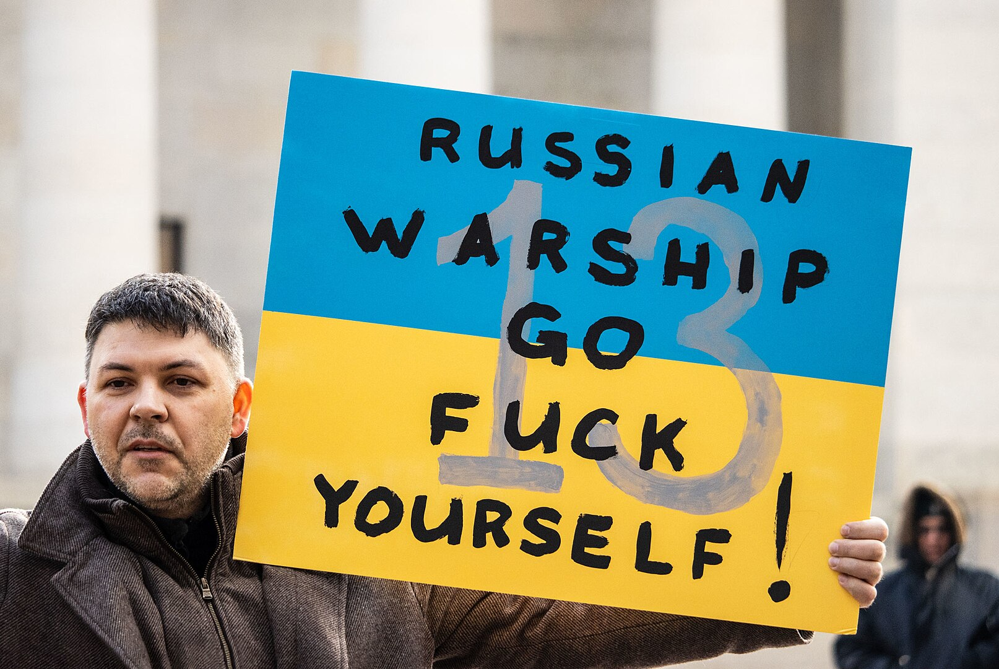
-
Pre March 3, 2022News
The majority of Ukrainian Navy warships were captured, sunk, or scuttled at the onset of the invasion. Notably, the scuttled vessels included the frigate Hetman Sahaidachny. Ukraine, whose fleet was massively outgunned, was left with only a few smaller vessels.
-
February–March 2022News
Russian Navy warships bombard the Ukrainian coastline off Odesa.
-
March 7, 2022News
Reports that Ukraine hit and sank a Russian patrol ship, Vasily Bykov, with rocket fire off Odesa were subsequently shown to be incorrect—the first of several ‘wishful sinkings’.
-
Mid-March 2022News
Russia starts removing the hull numbers from its warships in the Black Sea to frustrate attempts to gather intelligence on their movements.
Subsequent reports indicated that the Russian frigate Admiral Essen was hit by a Neptune missile off Odesa. There were several 'wishful sinkings' at the time; however, indications are that this occurred. The missile did not hit cleanly, causing limited damage.
-
March 22, 2022Hit
A Russian Raptor-class assault boat is hit by a Ukrainian anti-tank missile near Mariupol.
-
March 24, 2022Hit
The Russian Navy Alligator-class landing ship Saratov is hit while unloading at Berdyansk on the Sea of Azov, possibly by a Ukrainian ballistic missile. The ship explodes, damaging two Ropucha-class landing ships, which managed to escape. The ship sinks at the quay, and Russia stops using the port for reinforcements.
-
April 7, 2022News
Naval News reports that the Slava-class cruiser Moskva is operating in a predictable pattern—a precursor of things to come.
-
April 13, 2022Hit
The Slava-class cruiser Moskva, flagship of the Black Sea Fleet and the most powerful warship in the area, is hit by two Ukrainian Neptune anti-ship missiles. It sinks the next day.
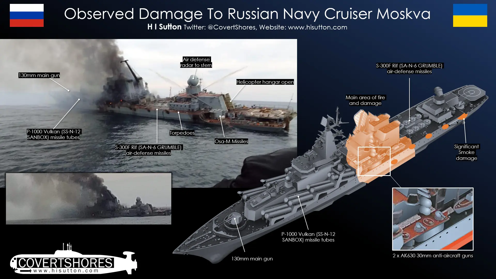
-
May 2022Post Moskva sinkingNews
Fighting intensifies around Snake Island. Ukrainian TB2 drones play a major role, hitting two Raptor-class assault boats and sinking a landing craft at the jetty. Russian attempts to reinforce and supply it begin to appear more precarious. On at least one occasion, Ukraine deploys a BM-27 Uragan MLRS on a barge to bombard the island.
-
Late May 2022News
Harpoon and Brimstone missiles are supplied to Ukraine, threatening Russian Navy warships.
Smaller Russian warships, including gunboats, are involved in the capture of Mariupol.
-
June 10, 2022News
The Ukrainian Navy landing ship Yuri Olefirenko is attacked by Russian rockets near Ochakiv. The ship, the largest remaining in the Ukrainian Navy, survives.
-
June 17, 2022Hit
The Russian ship Vasily Bekh, carrying an SA-15 GAUNTLET (Tor) air-defense missile system, is sunk by Harpoon or Neptune missiles. Ukrainian officials claim that the ship was hit twice by Harpoon anti-ship missiles, which represents the first successful combat use of the weapon in Ukrainian hands.
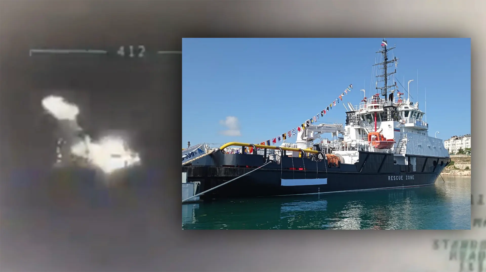
-
June 20, 2022Hit
Ukraine attacks Russian-controlled gas platforms in the mid-Black Sea with Harpoon or Neptune missiles (Reuters).
-
June 29, 2022News
Two target barges, normally based at the Russian naval base at Novorossiysk, were towed to Kerch. They are positioned as decoys to protect the bridge from attack.
-
June 30, 2022News
Russia abandons Snake Island. Threatened by Harpoon and Neptune missiles, Russian ships largely withdraw from the western side of the northern Black Sea. This is a significant change in the balance of the war.
-
July 7, 2022News
Ukrainian forces briefly land on Snake Island. Special Forces from the 73rd Naval Special Purpose Center use underwater vehicles in this mission.
-
July 27, 2022News
The Black Sea Grain Initiative (BSGI) is signed, effectively breaking the blockade of Odesa (United Nations).
-
July 31, 2022Ukraine takes the fight to CrimeaHit
A Ukrainian uncrewed aerial vehicle (UAV) attacks Russian Navy headquarters in Sevastopol. Russia cancels planned Navy Day events in the port.
-
August 17, 2022News
The commander of Russia's Black Sea Fleet (BSF), Admiral Igor Osipov, is removed from his post. His deputy, Viktor Sokolov, takes command.
-
August 20, 2022Hit
A follow-up Ukrainian uncrewed aerial vehicle (UAV) attacks Russian Navy headquarters in Sevastopol.
-
August 24, 2022News
The Slava-class cruiser Marshal Ustinov leaves the Mediterranean to return to its home port in the Northern Fleet, leaving the Russian Navy weaker in the Mediterranean.
-
Early September 2022News
A Russian nuclear-powered submarine, likely the Severodvinsk, is reported in the Mediterranean. Seen as part of the outer defense for the Black Sea operations. Nuclear submarines are the most powerful, and most survivable, assets in the Russian Navy.
-
September 8, 2022News
Romanian Navy Musca-class minesweeper Lieutenant Dimitrie Nicolescu (29) is damaged by a floating mine off the Romanian coast. Romanian forces have neutralized several floating mines believed to have broken free from their moorings further north. Attribution unclear.
-
September 21, 2022News
A Ukrainian explosive uncrewed surface vessel (USV) washes up on a beach outside Sevastopol. Popularly called 'maritime drones', Russian forces destroy it but otherwise do not appear to react to the new threat.
-
September 26, 2022News
Nord Stream 1 & 2 pipelines sabotaged in the Baltic.
The attack on the pipeline was one of the most dramatic and consequential acts of sabotage in modern times. It was also an unprecedented attack on a major element of global infrastructure—the network of cables, pipes, and satellites that underpin commerce and communication. It effectively destroyed a project that had required decades of strenuous labor and political muscle and had cost roughly $20 billion, with half of that money coming from Gazprom, the other half from European energy companies. The attack was a financial blow to Russia and upended the EU’s energy planning and policy.
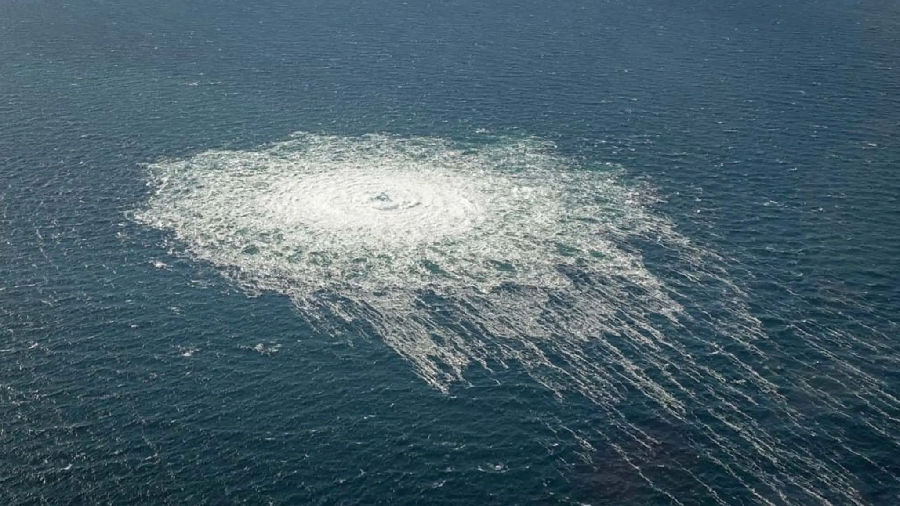
The aftermath of the underwater explosion that breached Nord Stream 2, as seen from a Danish airplane near the island of Bornholm (Danish Defense Command / Forsvaret Ritzau Scanpix / Reuters) -
September 29, 2022Hit
A major combined Ukrainian maritime drone (USV) and UAV attack targets Sevastopol. Several USVs penetrate the harbor and two warships—the minesweeper Ivan Golubets and frigate Admiral Makarov—are hit. Neither ship is sunk. However, Russia withdraws its fleet into bases and begins establishing increased defenses.
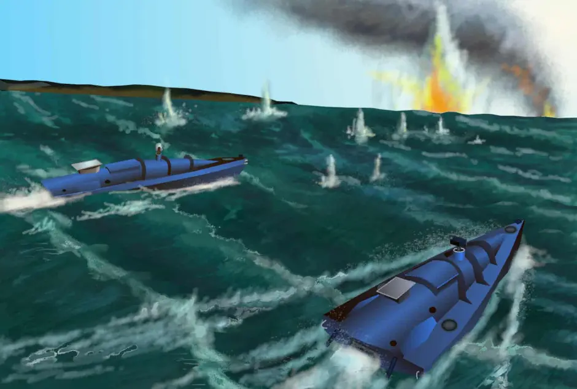
-
October 26, 2022News
Reports that Russia is attempting to reactivate a legacy naval base at Balaklava, south of Sevastopol.
-
November 18, 2022News
Ukrainian USV attacks Novorossiysk. No significant damage is reported, but the attack demonstrates the range of these vessels.
-
January 20232023News
The small Russian naval base at Feodosia becomes more important with Kalibr-armed Buyan-M corvettes using it.
Russia sows naval mines in the Dnieper River near Kherson, seemingly to defend against Ukrainian river crossings.
-
January 11, 2023News
Russian warships and submarines based at Novorossiysk temporarily evacuated in the face of a perceived Ukrainian threat. Vessels return.
-
February 2023News
SpaceX and its founder, Elon Musk, announce that they will restrict Ukraine from using their Starlink satellite communications system for long-range drones. This may have prevented Ukraine from using its explosive USVs near Crimea until an alternative could be found. The Russian Navy increases activity off Crimea.
-
February 10, 2023News
Russia deploys its own explosive USVs, with one targeting the bridge at Zatoka, south of Odesa.
-
February 28, 2023News
Ukrainian UAV attack on oil facilities at the port of Tuapse, north of Sochi. This is notable for its distance from Ukrainian-controlled territory and strategic relevance. Russia deploys air defenses there, observed March 6.
-
March 22, 2023Hit
Ukrainian maritime drones (USVs) and aerial drones (UAVs) attack Sevastopol. Local reports suggest three USVs were destroyed, though video evidence suggests at least one penetrated deep inside the protected harbor.
Ukrainian forces reveal a new model of maritime drone (USV).
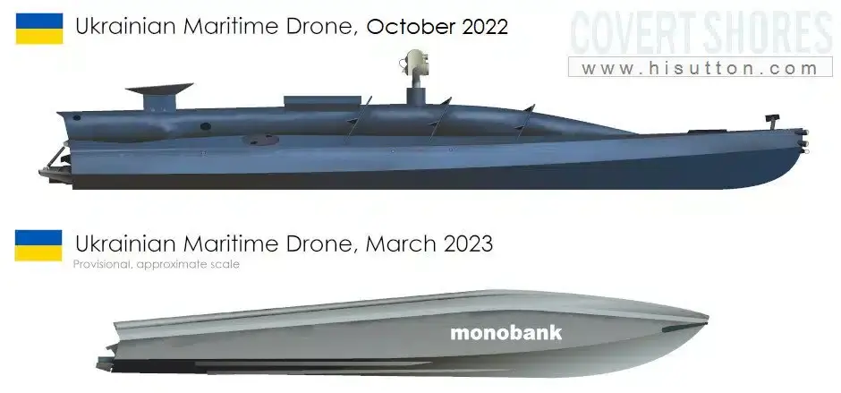
Ukraine’s first USV attack on the Sevastopol Naval Base was a real shock for the Russian Black Sea Fleet, perhaps one of two major naval incidents in the Russo-Ukrainian war. The Russian fleet was criticized by many analysts after the assault due to the lack of countermeasures in its most significant naval base in the Black Sea. On the other side, this attack was considered a breakthrough in naval warfare, standing as the first large-scale suicide naval drone attack in naval history.
-
Mid-April 2023News
Russian forces remove privately owned boats in the occupied town of Henichesk, Kherson Oblast, on the Sea of Azov. It is unclear why.
-
April 22, 2023News
Ukraine reveals 'Toloka' family of uncrewed underwater vehicles. Their production status is unclear.
-
May 24, 2023Hit
The Russian intelligence ship Ivan Khurs is attacked by three Ukrainian maritime drones in the vicinity of
41.883333°, 30.603611°. One almost makes contact, but the attack was unsuccessful. The ship returns to Sevastopol.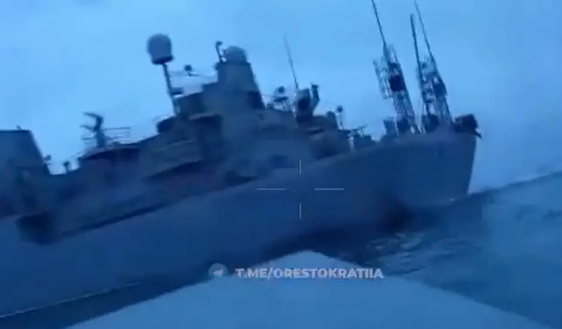
-
Early June 2023News
Russia increases the number of dolphin pens in Sevastopol Harbor.
-
June 11, 2023News
Reports from Russian sources claiming that the Black Sea Fleet Vishnya class Intelligence Ship Priazovye, was attacked by several (possibly 6) maritime drones (USVs) in the southeast Black Sea. Later located in the vicinity of
43.064437°, 36.813334°. All USVs reported destroyed. Interestingly, they report that she was on duty "defending the TurkStream gas pipeline" 300 km south-east of Sevastopol. Her claimed reason for being there may be significant and should not be taken at face value. -
June 18, 2023Summer counter offensiveNews
A Russian Sevastopol-designed 'Sargan' USV, similar to Ukraine's 'maritime drones', is displayed at the St. Petersburg International Economic Forum (SPIEF).
-
Mid-June 2023Hit
The Russian Navy applies deceptive camouflage to warships in the Black Sea.
-
July 11, 2023News
Two Ropucha-class landing ships are used in a civilian role ferrying civilian traffic across the Kerch Strait. This operation continues after the Kerch Bridge attack on July 17.
-
July 16, 2023Hit
Ukrainian USVs attack Sevastopol. Reportedly none penetrated the harbor. Modified jet skis were used. According to Mikhail Razvozhayev\'s Telegram channel, two were destroyed and another stopped by electronic warfare (EW). Five UAVs were also employed. One Ukrainian USV was known to have been in the vicinity of
43.060278°, 36.766944°. -
July 17, 2023News
Ukrainian USVs attack the Kerch Bridge. Both spans of the road bridge are seriously damaged.
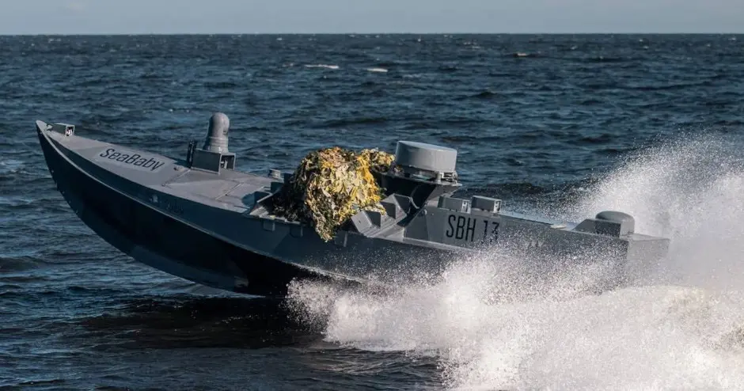
Ukrainian SBU Sea Baby USV of the type involved in the Kerch Bridge attack. -
July 18, 2023News
Black Sea Grain Initiative (BSGI) expires without renewal when Russia withdraws. Was expected.
Repeated Russian missile and OWA-UAV attacks target Odesa and other Ukrainian-controlled ports. A high number of KITCHEN and STOOGE missiles is noteworthy. Russia is also suspected of sowing sea mines near shipping lanes to and from Odesa.
-
July 25, 2023Post-Black Sea Grain InitiativeNews
Reportedly, the Russian Navy Project 22160 patrol ship Sergey Kotov is attacked by two Ukrainian USVs. The attack was unsuccessful. Subsequently, on July 26, the UK MoD update noted that the ship had been deployed to the southern Black Sea, patrolling the shipping lane between the Bosphorus and Odesa.
-
July 28, 2023News
Russian MoD prohibits small boats (pleasure boats, sailboats, inflatable boats, jet skis, windsurfers, etc.) from transiting the Kerch Strait.
-
August 1, 2023News
The Russian MoD reports two patrol ships, Sergey Kotov and Vasily Bykov, tasked with "controlling navigation" 183 nm SW of Sevastopol, were attacked. The location was later determined to be in the vicinity of
42.117219°, 31.229180°. Three USVs were used. Meanwhile, grain ships continued sailing to Odesa without apparent interruption. -
August 3, 2023News
A Ukrainian USV is destroyed by gunfire from a Russian Hip helicopter in the vicinity of
43.060278°, 36.766944°. This was possibly part of the next day's attack on Novorossiysk.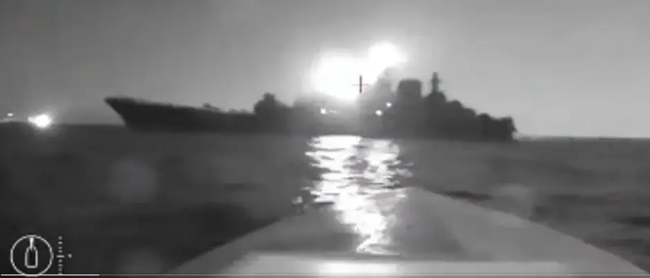
Ukrainian maritime drone (USV) lines up an attack on the Russian Navy Ropucha Class landing ship Olenegorsky Gornyak, night of August 3-4. The attack inflicted major damage. -
August 4, 2023News
The Russian Navy Ropucha-class landing ship Olenegorsky Gornyak is struck by a Ukrainian maritime drone (USV) outside Novorossiysk, causing significant damage. It is towed to Novorossiysk.
-
August 5, 2023Hit
Russian oil products tanker 'Sig' hit by Ukrainian maritime drone (USV) south of Kerch Bridge. Ship significantly damaged.
-
August 13, 2023News
The Russian patrol ship Vasily Bykov stopped and boarded the Palau-flagged Sukru Okan general cargo ship in the southern Black Sea as it sailed towards Ukraine. This is the first reported boarding following the termination of the Black Sea Grain Initiative (BSGI).
-
August 14, 2023News
Floating sea mines wash up at Costinești, near Constanța in Romania. One explodes on a pier; they were possibly laid by Russia in July.
-
August 16, 2023News
Videos of prototypes of AMMO Ukraine's 'Marichka' AUV are revealed.
-
August 18, 2023News
A Ukrainian USV attack targets the Russian arms transport Sparta-IV, escorted by Navy Pr.1135M Krivak II-class frigate Pytlivyy and Pr.22160 Bykov-class patrol ship Vasily Bykov in the eastern Black Sea. Sparta-IV was returning from a voyage to Tartus in Syria, likely carrying military equipment. The attack was unsuccessful.
-
August 22, 2023News
Engagements near Snake Island. Russian MoD publishes footage of a Ukrainian Willard Sea Force RHIB being attacked by an Su-30SM FLANKER-C.
-
August 24, 2023News
A cross-beach commando raid by Ukrainian Special Forces on Cape Tarkhankut, western Crimea. The attack was preceded on August 23 by a strike on the S-400 air defense system there, reportedly including a Neptune missile and elements launched from the sea.
-
Late August 2023News
Russia begins placing barriers to protect the portion of the Kerch Bridge that was attacked on July 17. Barges are sunk on the western approach, and bridge repairs continue.
Dolphin pens appear at the Southern Naval Base at Novoozerne, Crimea (NPR).
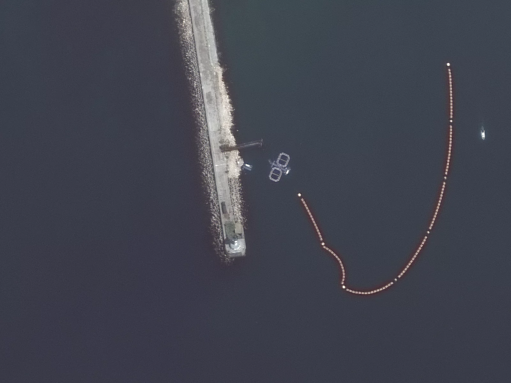
-
September 1, 2023News
Russian social media reports that a Ukrainian USV (and possibly UAV) attack on the Kerch Bridge was thwarted. The Pr.1135M Krivak II-class frigate Pytlivyy may have been targeted, or otherwise involved. Unconfirmed.
Ukraine lands on and reclaims the 'Boyko Towers' gas rigs/platforms in the Black Sea.
-
September 13, 2023News
A Ukrainian strike on Sevastopol, reportedly with Storm Shadow / SCALP-EG cruise missiles, leaves the Pr.775 Ropucha-class landing ship Minsk and Pr.636.3 Improved Kilo-class submarine Rostov-on-Don (B-237) seriously damaged in dry dock.
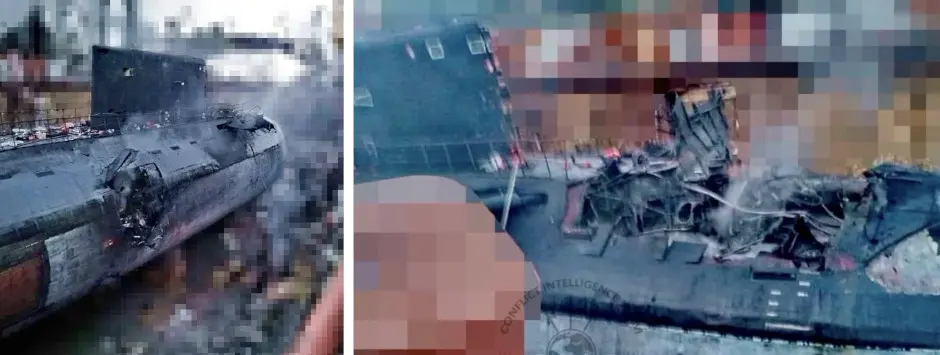
-
September 14, 2023News
Ukrainian USV attacks target Russian tanker Yaz and weapons transport Ursa Major in the Black Sea. The Russian MoD states that 11 USVs were destroyed: three by Pr.22160 Bykov-class patrol ship Vasily Bykov, three by naval aviation (likely helicopters), and five by Pr.22160 Bykov-class patrol ship Sergey Kotov.
A USV attack targets Pr.1239 Bora-class missile corvette Samum, reportedly using two experimental semi-submersible USVs.
-
September 20, 2023News
Increased Ukrainian missile and OWA-UAV (one-way attack aerial drones) attacks on Black Sea Fleet targets, including major facilities in Sevastopol on September 20 and the main HQ building on September 22.
-
September 20, 2023News
The Togo-flagged merchant ship Seama is hit by a floating mine in a Danube anchorage, 12 miles offshore from the Sulina area of Romania.
A Ukrainian cruise missile strike targets Black Sea Fleet installations near Sevastopol.
-
September 22, 2023Hit
Ukrainian Storm Shadow missiles strike Russian Black Sea Fleet headquarters in Sevastopol.
-
October 5, 2023News
Russian Navy submarine operations have moved almost entirely to Novorossiysk. After missile strikes, few high-value warships visit Sevastopol and stay only for short periods.
The Turkish-flagged general cargo ship Kafkametler hit a sea mine while waiting outside the entrance to the Sulina Canal, Romania.
-
October 8, 2023News
An attack on the Balticconnector gas pipeline and nearby submarine communication cable (SCC) occurs in the Gulf of Finland. Attribution remains to be confirmed.
-
October 13, 2023Hit
Ukrainian maritime drones, likely USVs, attack Russian warships outside Sevastopol. A Buyan-M corvette is reportedly damaged, with sources on both sides mentioning the attack but no official confirmation.
-
October 16, 2023News
The Liberian-flagged tanker Ali Najafov, coming from Georgia, struck a mine in the region near the Bystroe Canal.
-
October 24, 2023News
Russian MoD reports that at about 4 o'clock Moscow time, in the northern part of the Black Sea, three unmanned boats of the Ukrainian Navy were detected. Russian forces responded; results remain unclear.
-
October 25, 2023News
Ukraine reports that Russian naval aircraft laid 'explosive devices' in the shipping lane to/from Odesa.
-
October 27, 2023Hit
Russian Pr.23040G minesweeper 'Vladimir Kozitsky' destroyed by explosion in Sevastopol Bay. Subsequently attributed to a Ukrainian SBU 'Sea Baby' USV.
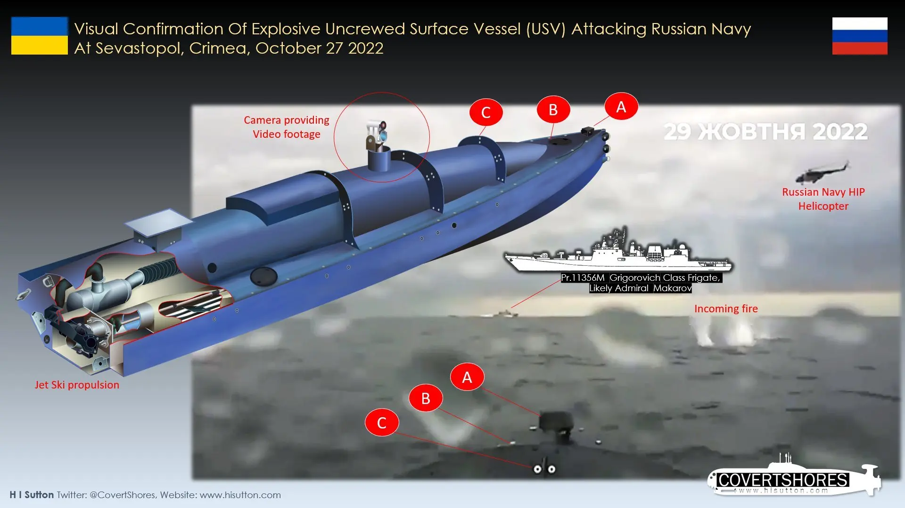
-
November 4, 2023Hit
Russian Pr.22800 Karakurt-class corvette is struck by Ukrainian missiles at a shipyard in Kerch.
-
November 10, 2023Hit
Liberian-flagged merchant ship KMAX Ruler is hit by a Russian anti-radiation missile in the port of Odesa.
Ukrainian maritime drones (USVs) operated by GUR hit two Russian Navy landing craft in Chornomors'ke, northern Crimea: one Pr.11770 Serna-class and one Pr.1176 Ondatra-class.
-
November 16, 2023News
The Liberian-flagged merchant ship Georgia S is struck by a floating mine in the northwestern Black Sea.
-
November 22, 2023News
A Ukrainian GUR Magura-5 USV washes up on a beach on the western side of Crimea. On November 25, Russia released video footage of an Su-30SM FLANKER aircraft strafing a small boat or USV off Crimea.
-
November 27, 2023News
A powerful storm batters the region, particularly affecting Crimea. Harbor defenses at Sevastopol and barriers at Kerch are damaged. Dolphin pens at Sevastopol harbor were apparently destroyed and later replaced. There are reports of one boat, possibly a Raptor-class assault boat, sinking.
-
December 6, 2023Hit
A Russian Su-24M FENCER-D strike aircraft is shot down over the Black Sea near Snake Island, reportedly by a Ukrainian air defense missile (possibly Patriot)—the first time Ukraine has demonstrated this reach.
-
December 14, 2023News
Russian company KMZ reveals its Dandelion USV, which reportedly will be deployed in combat in the Black Sea. The vehicle appears similar to Ukrainian types.
The Russian Navy adds new boom defenses to the Southern Navy Base in Novoozerne, Crimea.
-
December 24, 2023News
Ukraine's SBU reveals the 'Kozak Mamai' USV, previously used in the attacks on the Ropucha-class landing ship Olenegorsky Gornyak and the tanker Sig.
-
December 25, 2023Hit
Ukraine hits the Russian Ropucha-class landing ship Novocherkassk in the port of Feodosia, Crimea. The ship caught fire and was seriously damaged, likely a total loss. Initial evidence suggests that she sank at the pier.
-
December 28, 2023News
A Russian Navy Pr.205P STENKA-class patrol boat was observed sunk at the pier in Sevastopol, reputedly hit by a Ukrainian USV (see possible related attack below).
-
December 30, 2023News
The Russian-appointed Governor of Sevastopol, Mikhail Razvozhayev, reported that Russian forces repelled a surface drone 3 km from Sevastopol. The USV was apparently destroyed by a helicopter. This is possibly related to a video released on January 1, 2024, showing SBU 'Sea Baby' USVs firing rockets in Sevastopol Bay.
-
January 19, 20242024News
Russia launches a P-35 (SS-N-3B SEPAL) supersonic anti-ship missile against Ukraine for the first time, possibly launched from a legacy hardened site near Sevastopol (The EurAsian Times).
-
January 31, 2024Hit
Ukraine's GUR attacks Russian Navy Tarantul-class missile corvette Ivanovets with USVs in the vicinity of Lake Donuzlav, Crimea. The vessel sank.
Russian warships in Sevastopol are increasingly using camouflage netting to break up their profile, in addition to the widespread application of 'deceptive' camouflage.
-
February 9, 2024News
Reported attempted attack by three or more Ukrainian semi-submersible unmanned boats (USVs) on Russian civilian transport ships in the southwestern Black Sea.
-
February 14, 2024Hit
Ukraine's GUR attacks Russian Navy Ropucha-class landing ship Caesar Kunikov with USVs on the southern coast of Crimea. The vessel sank.
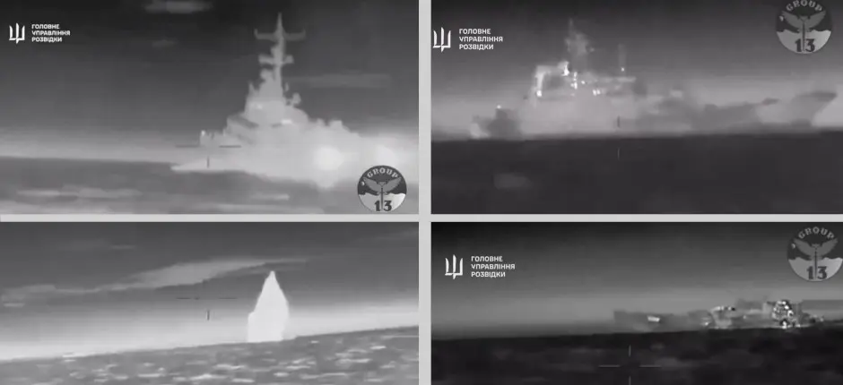
-
February 15, 2024News
Reports indicate that the commander of Russia's Black Sea Fleet (BSF), Admiral Viktor Sokolov, has been removed from his post. His deputy, Vice Admiral Sergei Pinchuk, likely takes command—the second change in command of the BSF since the full-scale invasion began.
Ukraine has repeatedly employed explosive-laden USVs to target ships, even in Russian ports hundreds of miles from Ukrainian-controlled waters. Ukraine also likely used them to damage the Kerch Strait Bridge, a vital logistical link between southern Russia and occupied Crimea. Ukraine is now developing an explosive-laden uncrewed undersea vehicle, which can achieve greater stealth than a USV.
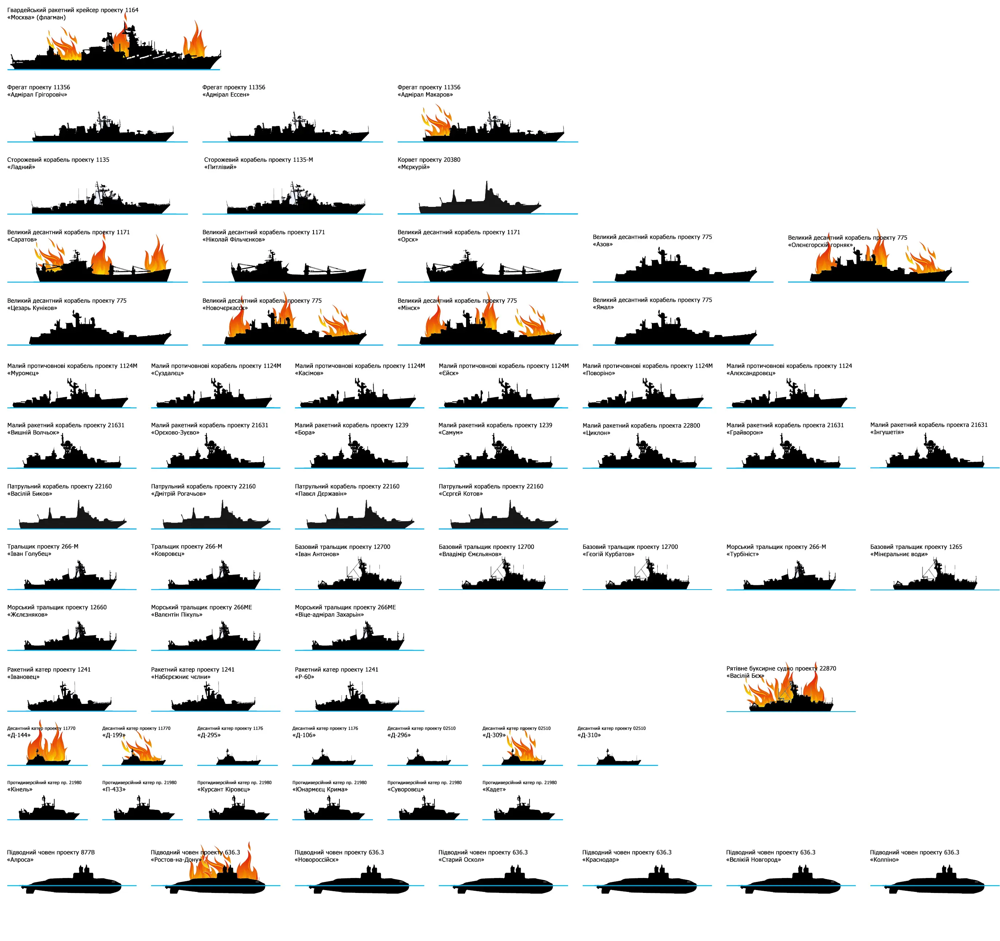